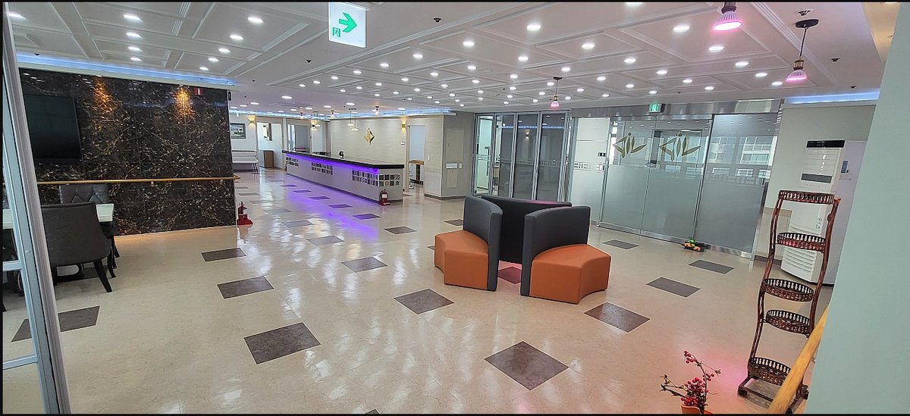
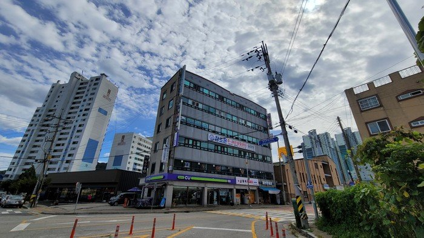
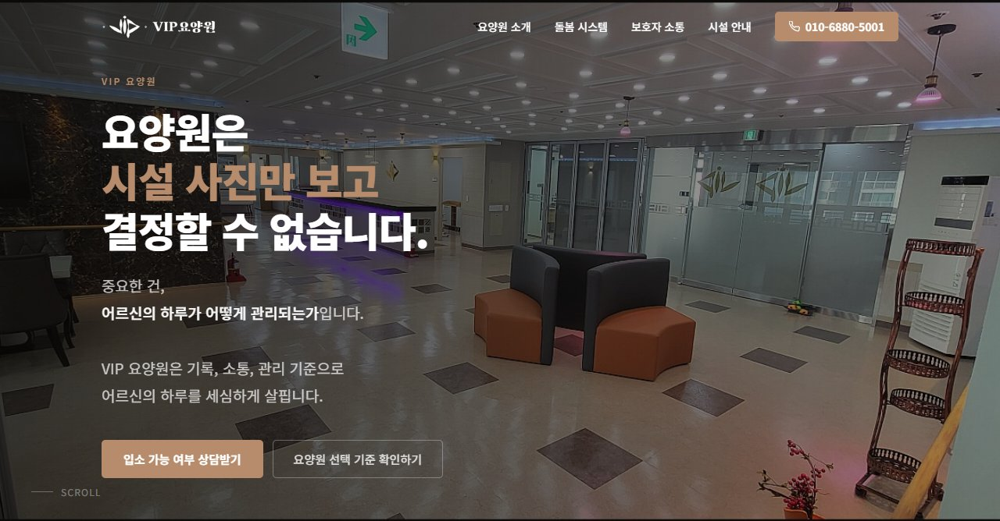
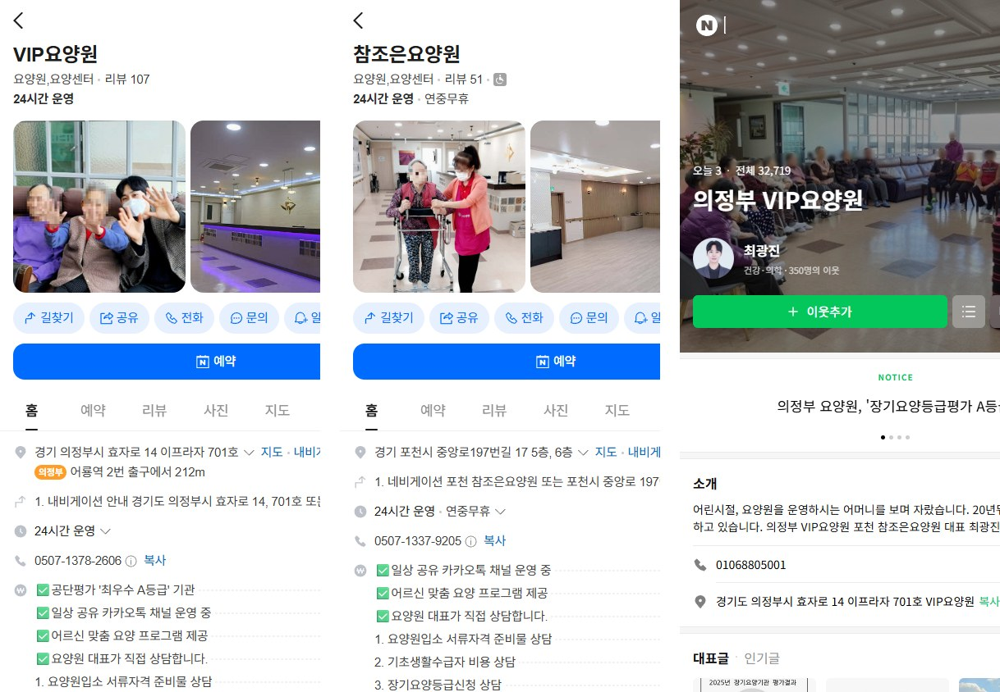

정원은 비어 있는데,
직원 급여일은 돌아옵니다.
인건비와 운영비는 매달 나갑니다.
그런데 입소할 어르신은 늘지 않습니다.

연고가 없던 의정부에서 요양원을 시작했습니다. 처음부터 입소자를 모집해야 했고, 약 11개월 만에 정원 29명을 채운 경험이 있습니다.

기존 요양원을 인수한 뒤 입소자를 추가로 확보했습니다. 20명에서 27명까지, 부족했던 7자리를 채운 운영 경험입니다.
운영·상담·시설·마케팅이 함께 만든 결과입니다. 마케팅만으로 채웠다고 말하지 않습니다.


보호자 문의가 부족한 건지,
문의는 오는데 입소로 이어지지 않는 건지.
어디서 막혀 있는지부터 함께 살펴보겠습니다.